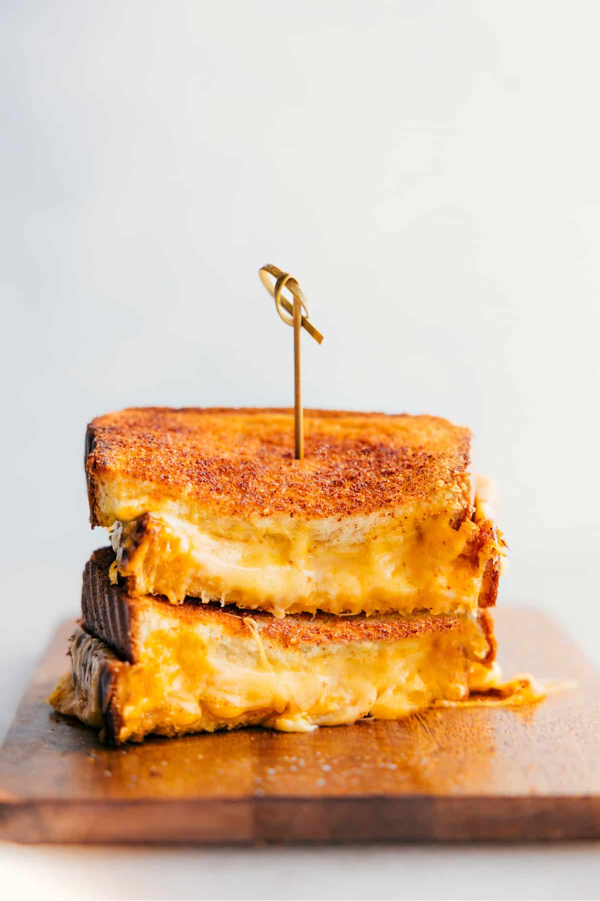

Home
Classic Grilled Cheese

Description
This classic sandwich is just as good as you remember it being in your childhood. No explanation needed. Enjoy!
Ingredients
- 2 slices of Martin's potato bread
- Mayonnaise
- 2 slices of Colby Jack cheese
Note: Martin's potato bread is my personal favorite, but you can use whatever bread you'd like.
Steps
- Spread mayonnaise on one side of each bread slice.
- Preheat skillet over medium heat.
- Place a slice of bread into skilled mayo side down and put cheese and remaining bread slice on top of it.
- Cook for 1 minute and then flip.
- Cook second side for another minute.
- Remove from heat and enjoy while hot.